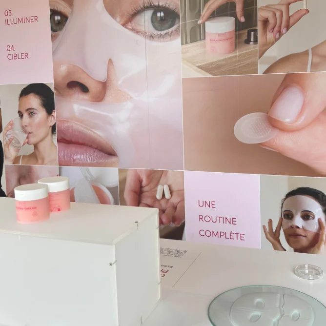

Performance / Affiliation
BIOCYTE x SOLAR METRICS Influence & affiliation

Le projet
Du branding à la performance : transformer l’image de marque en un levier d’acquisition rentable et mesurable.
01 •
Le contexte
Historiquement perçu comme un levier purement orienté vers l’image de marque et la notoriété, le marketing d’influence fait aujourd’hui l’objet d’une transition stratégique majeure chez Biocyte.
L’ambition est de transformer ce canal en un véritable levier d’acquisition mesurable (ROI cible de 2,5), via une stratégie hybride influence-affiliation, tout en consolidant sa notoriété, sa désirabilité et sa crédibilité scientifique.

02 •
Notre proposition
Nous avons construit un dispositif full funnel associant influence paid et affiliation : création d’un programme d’affiliation via Affilae, tracking centralisé des ventes, construction d’un crew de talents affinitaires, collaborations pensées dans la durée plutôt qu’en one-shot, activations paid couplées à la commission et pilotage continu des performances.
La stratégie prévoyait également de travailler plusieurs temps forts produits K-Beauty, solaire, minceur, kératine… avec des profils sélectionnés en fonction de leur affinité avec les besoins consommateurs.
Les résultats.
La stratégie déployée a largement dépassé les attentes initiales en matière de rentabilité et de conversion!

Le projet suivant